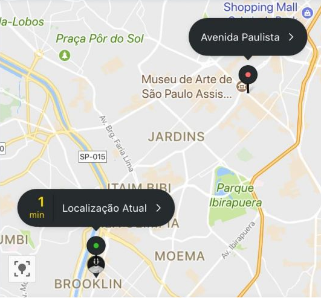

<style>
img {
  position: absolute;

}
#c {

  z-index: 2;
}
#g, #z {
  top: 257px;
  left: 130px;
  z-index: 1;
}

#f {
  top: 257px;
  left: 130px;
  z-index: 0;
}

#b {
  top: 650px;
  left: 570px;
  z-index: 10;
  cursor: pointer;
}


#g {
	-webkit-animation: rotation 4s infinite linear;	
}

@-webkit-keyframes rotation {
		from {
				-webkit-transform: rotate(0deg);
		}
		to {
				-webkit-transform: rotate(359deg);
		}
}

</style>

<script>
turning = true
function turn(){
	if(turning){
		document.getElementById("g").id = "z"
	}
	else {
		console.log("aha")
		document.getElementById("z").id = "g"
	}
	turning = !turning
}
</script>